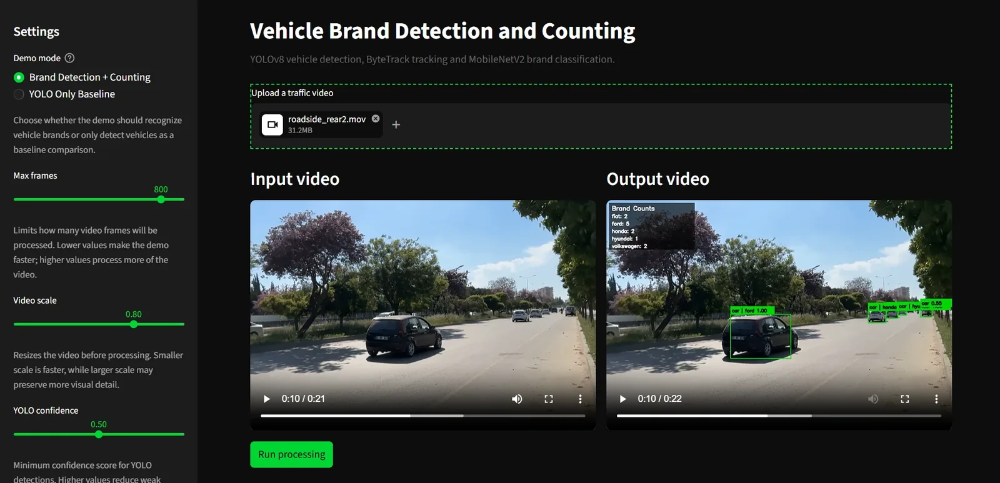
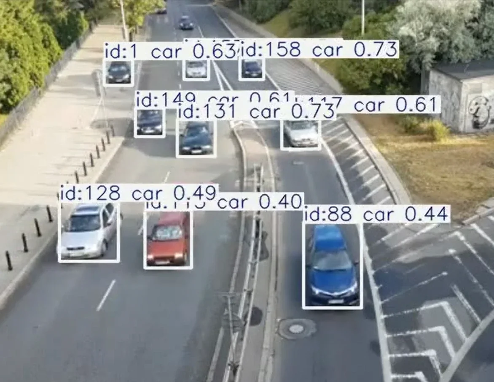

özet
Araç görüntülerini analiz edip markayı sınıflandırmaya çalışan bir yapay zekâ çalışması. Ana alanım oyunlar ama bir modelin fotoğrafa bakıp doğru markayı söylemesini izlemek ayrı bir keyifti.
rolüm
Veriyi hazırlamaktan görüntü ön işlemeye, model eğitiminden tahmin akışına ve sonuçların değerlendirilmesine kadar her adımda çalıştım.
süreç
video / YOLOv8 araç tespiti / ByteTrack takip / MobileNetV2 marka / sayım
kapsam
Odak noktası, araç görsellerinden anlamlı özellikler çıkarıp bunlardan marka tahmini üretmek.
ekran görüntüleri
Demo iki modda çalışıyor: marka tespiti ve sayım ya da karşılaştırma için yalnızca YOLO. Görsellere tıklayınca büyüyor.





teknolojiler
- Python
- TensorFlow
- Keras
- OpenCV
- NumPy
- YOLOv8
- ByteTrack
- MobileNetV2